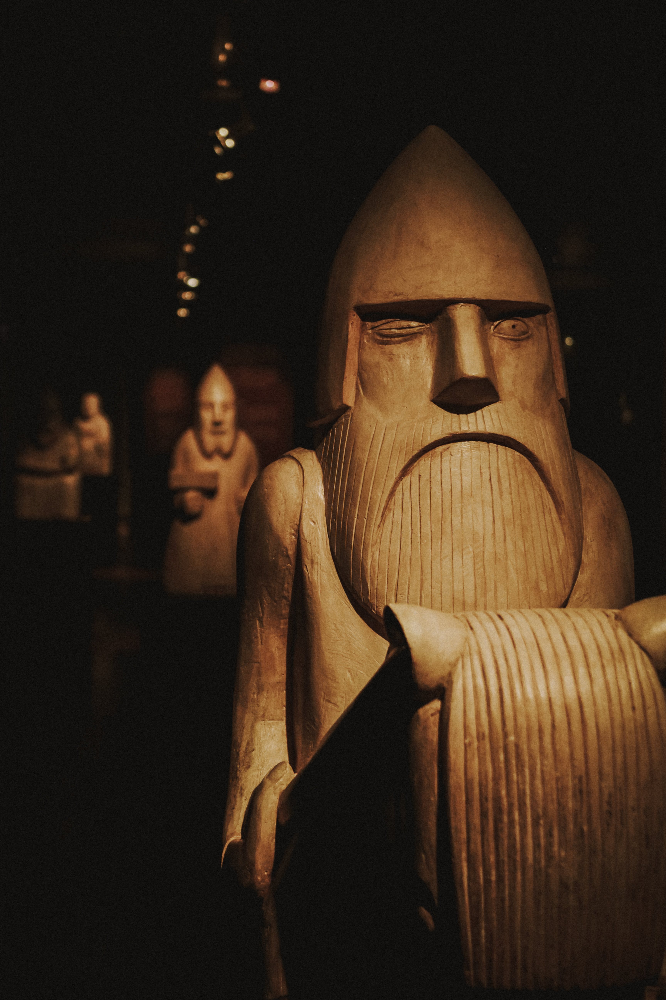

This is an Odin fanpage
This website is a fun website that deals with the norse God Odin and his attributes that are wisdom and poetry. He is the one-eyed principal God, also called Wotan, the father of Thor, a shape-shifter with his two ravens Huginn (thought) and Muninn (memory).
